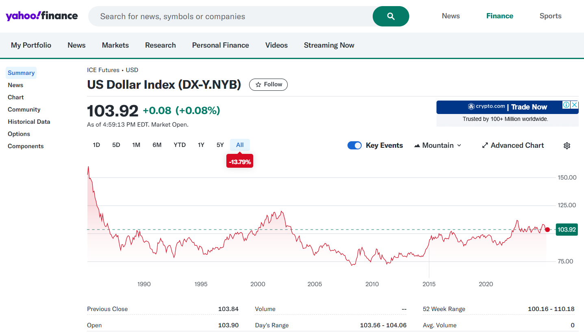
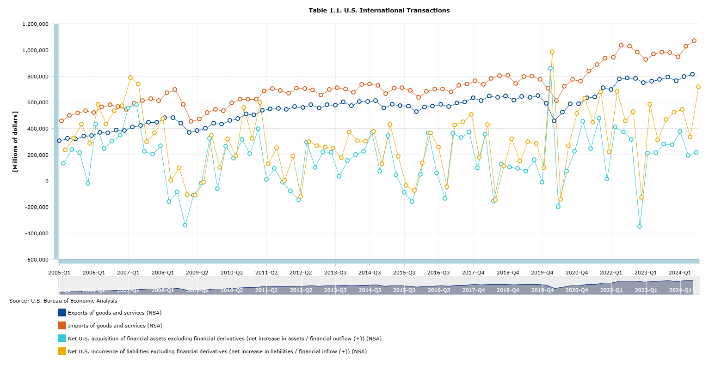
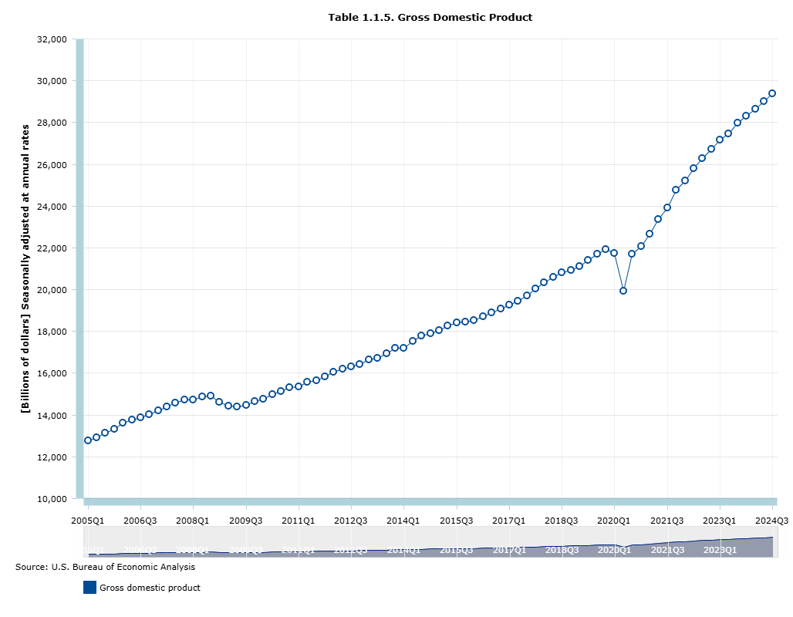
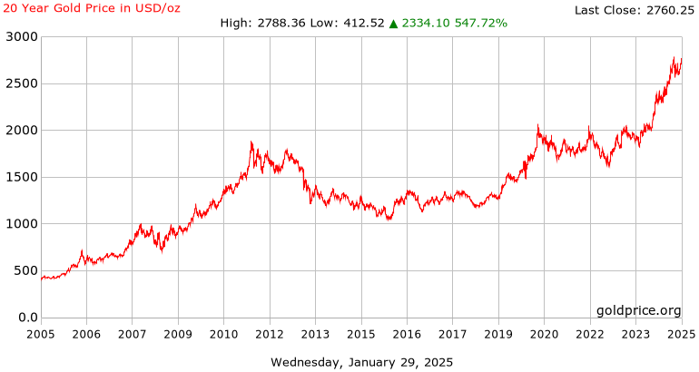
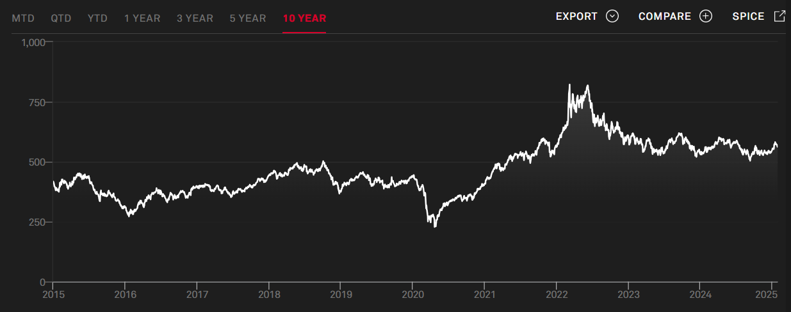

| Date | Price | Open | High | Low | Vol. | Change % |
|---|---|---|---|---|---|---|
| 12/29/2024 | 108.95 | 108.01 | 109.53 | 107.74 | NaN | 0.88% |
| 12/22/2024 | 108.00 | 107.82 | 108.30 | 107.68 | NaN | 0.35% |
| 12/15/2024 | 107.62 | 106.94 | 108.54 | 106.70 | NaN | 0.58% |
| 12/08/2024 | 107.00 | 105.97 | 107.19 | 105.80 | NaN | 0.89% |
| 12/01/2024 | 106.06 | 105.83 | 106.73 | 105.42 | NaN | 0.30% |
Data Sources
Note
The raw data collected for this project is available here, and the sources are provided in the text.
U.S. Dollar Index (DXY)
- Data Source: Investing.com

- Description: This dataset contains weekly U.S. Dollar Index (DXY) data from January 1, 2005, to December 31, 2024.
- The U.S. Dollar Index (DXY) measures the value of the U.S. dollar against a basket of major foreign currencies, including the euro, Japanese yen, British pound, Canadian dollar, Swedish krona, and Swiss franc.
- Weekly data helps focus on medium- to long-term trends, reducing short-term market noise and improving analytical clarity.
- Here is a view of a sample of the data:
- The U.S. Dollar Index (DXY) measures the value of the U.S. dollar against a basket of major foreign currencies, including the euro, Japanese yen, British pound, Canadian dollar, Swedish krona, and Swiss franc.
U.S. International Trade
- Data Source: U.S. Bureau of Economic Analysis (BEA)

Description: This dataset contains quarterly, not seasonally adjusted U.S. exports and imports of goods and services in the current account, and net financial outflows and inflows in the financial account from 2005 Q1 to 2024 Q3.
Current Account: The current account measures the flow of goods, services, income, and current transfers into and out of the U.S. It includes trade in goods and services, income receipts from abroad (such as investment income and wages), and current transfers like remittances.
Exports of Goods and Services: This refers to the value of all goods and services that the U.S. sells to foreign countries. Exports include both tangible products (goods) and intangible products (services) such as financial services, tourism, and intellectual property.
Imports of Goods and Services: This refers to the value of all goods and services that the U.S. purchases from foreign countries. It encompasses both physical goods (such as electronics, machinery, etc.) and services (such as insurance, transportation, and consulting).
Financial Account: The financial account records transactions that involve financial assets and liabilities. It reflects the net change in ownership of U.S. financial assets and liabilities, including direct investments, portfolio investments, and other financial instruments.
Financial Outflow: The net U.S. Acquisition of Financial Assets Excluding Financial Derivatives (Net Increase in Assets) measures the U.S.’s net purchases of foreign financial assets, such as stocks, bonds, and real estate. A net increase in assets indicates a financial outflow from the U.S. to other countries.
Financial Inflow: The net U.S. Incurrence of Liabilities Excluding Financial Derivatives (Net Increase in Liabilities) refers to the net increase in foreign investments or loans in the U.S., including foreign direct investment, portfolio investment, and other types of financial liabilities. A net increase in liabilities indicates a financial inflow into the U.S. from foreign entities.
Quarterly, Not Seasonally Adjusted: The data is provided on a quarterly basis, which allows for a better understanding of short-term fluctuations and trends compared to annual data. The data is not seasonally adjusted because seasonal variations (such as those due to holidays or weather) will be analyzed and removed in later analysis.
Domestic Macroeconomic Factors
- Data Source: U.S. Bureau of Economic Analysis (BEA)

Description: This dataset contains quarterly U.S. Gross Domestic Product (GDP) in billions from 2005 Q1 to 2024 Q3.
- Gross Domestic Product (GDP): GDP is the total monetary value of all goods and services produced within a country’s borders over a specific period, typically measured annually or quarterly. It serves as a comprehensive indicator of a nation’s economic performance. GDP includes the value of consumption, investment, government spending, and net exports (exports minus imports). It is often used to compare the economic health of different countries or to track the economic performance of a single country over time.
The Gold Market
- Data Source: Investing.com

Description: This dataset contains weekly Spot Gold in US Dollar from January 1, 2005, to December 31, 2024.
- Spot Gold(XAU/USD): The Spot Gold price (XAU/USD) refers to the current price of gold for immediate delivery, quoted in US dollars per ounce. It is the most widely used measure of gold’s market value and is influenced by factors like global demand for gold, inflation expectations, and economic stability. This price fluctuates throughout the trading day based on market dynamics and is a crucial benchmark in the gold market.
Global Commodity Prices
- Data Source: S&P Global

- Description: This dataset contains daily S&P GSCI Index price in US Dollar from December 31, 2014, to December 31, 2024. The S&P GSCI is the first major investable commodity index. It is one of the most widely recognized benchmarks that is broad-based and production weighted to represent the global commodity market beta. The index is designed to be investable by including the most liquid commodity futures, and provides diversification with low correlations to other asset classes.